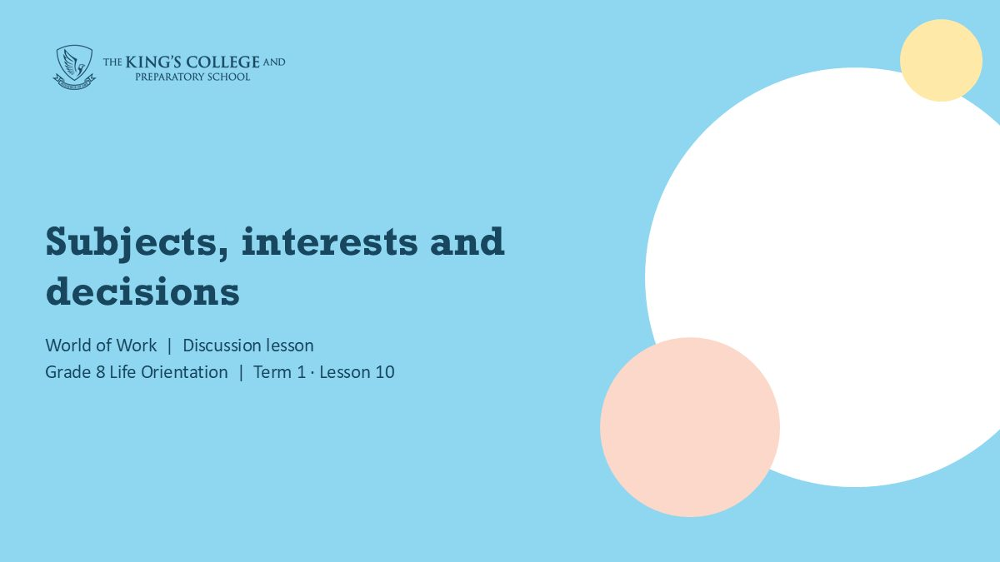

Term 1 · Lesson 10 · Discussion lesson
Subjects, Interests and Decisions
Start Here
Today I Will
- Link school subjects to my interests and abilities
- Describe what different subjects demand
- Use five steps to make a good decision
Which subject do you enjoy most, and which are you best at? Are they the same subject?
Words to Know
| Word | Meaning |
|---|---|
| Interest | Something you enjoy doing or learning about. |
| Ability | Something you can do well, now or with practice. |
| Subject demands | The skills and work a subject expects from you (e.g. calculations, essays, practicals). |
| Thinking skills | Ways of thinking a subject trains, such as logical, creative or critical thinking. |
| Decision-making | Choosing between options in a careful, step-by-step way. |
| Elective | A subject you choose, as opposed to a compulsory one. |
Slides

Notes
Next year you will choose your subjects for Grades 10 to 12. Those choices can open or close doors to careers, so it helps to understand now how subjects, interests and abilities fit together, and how to make a wise decision.
Interests, Abilities and Subject Demands
Your interests are what you enjoy; your abilities are what you can do well (now, or with practice). Each subject also has its own demands: the kind of work and thinking it expects. A good subject choice matches your interests AND abilities with what the subject demands.
| Subject | What it demands | Thinking skills it trains |
|---|---|---|
| Mathematics | Regular practice, solving problems step by step | Logical and analytical thinking |
| Languages | Reading, essays, speaking, literature | Creative and critical thinking |
| Natural Sciences | Investigations, experiments, explaining | Scientific and analytical thinking |
| EMS | Calculations, record-keeping, business ideas | Organising and problem-solving |
| Creative Arts | Practical work, performance, creativity | Creative thinking and self-expression |
| Technology | Designing, making, testing solutions | Practical problem-solving |
Types of Learning Activities
- Practical activities: doing, making, experimenting.
- Theoretical activities: reading, understanding concepts, writing.
- Individual activities: working on your own.
- Group activities: working with others.
- Most subjects mix all four, but some lean more to one type. Think about which you enjoy.
Five Steps to a Good Decision
- Identify the decision: what exactly must I decide?
- Gather information: ask teachers, parents and people in careers; look at your marks.
- Consider the options: list the choices with their advantages and disadvantages.
- Choose and act: pick the option that best fits your interests, abilities and values.
- Review: after some time, check whether it is working and adjust if needed.
Thabo loves sport, leads his team and does well in EMS, but finds Natural Sciences hard. Step 1: Which electives should I choose? Step 2: He asks his teachers and reads about sports management. Step 3: Options: Business Studies + Accounting, or Life Sciences. Step 4: He chooses the business subjects because they match his interests (sport, leading) and abilities (EMS). Step 5: In Grade 10 he checks how he is coping.
Common Mistakes When Choosing Subjects
- Choosing a subject because your friends chose it.
- Choosing (or avoiding) a subject because of one teacher.
- Choosing the 'easy' option without thinking about the careers you might want.
- Not asking for advice from people who know you and know the subjects.
A Biblical View
Proverbs 16:9 says we plan our way, but the Lord establishes our steps. Make careful plans, ask for wise advice, and pray for guidance; then trust God with the outcome.
Know the five decision-making steps in order, and be able to apply them to a learner in a scenario (e.g. a subject choice).
Choose subjects that fit your interests, abilities and future, not your friends' choices.

We make plans, but God guides our steps. How can you include prayer and wise advice when you make big decisions?
In Class: Help Thabo Decide
- Scenario: Thabo loves sport, is good at organising teams and gets good marks in EMS, but finds Natural Sciences hard.
- Step 1: What decision must he make?
- Step 2: What information should he gather?
- Steps 3–4: Which two options would you advise, and why?
- Share one answer with the class.
Test Yourself
- What is the difference between an interest and an ability?
- Name the five decision-making steps.
- Why shouldn't you choose a subject just because your friends do?
Show answers
1. An interest is what you enjoy; an ability is what you can do well. 2. Identify, gather information, consider options, choose and act, review. 3. Their interests and abilities may differ from yours; the subject may not suit your future.
Finished Early?
Use the five decision-making steps on a real choice of your own.
- Pick a small decision you face, such as which extramural to try next term.
- In your LO book, write one line for each step: Identify, Gather information, Consider options, Choose and act, Review.
- Under 'Consider options', list one advantage and one disadvantage for each choice.
- Write when you will review your decision (a date).